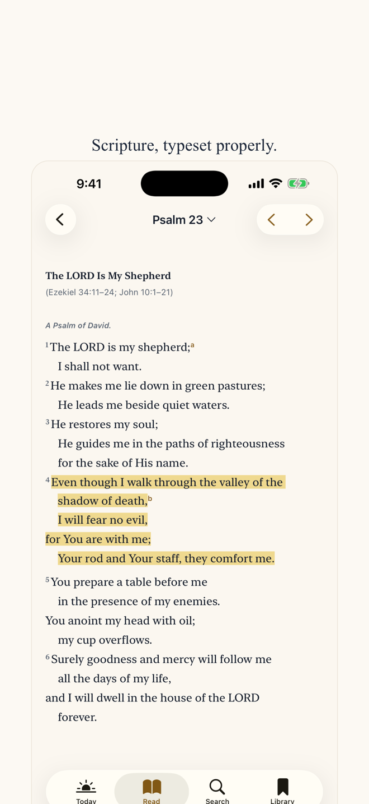
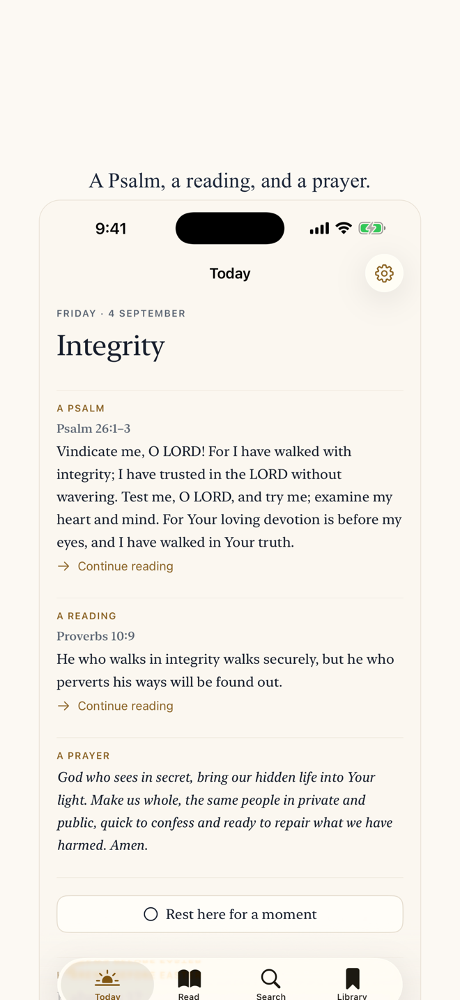

Lamp & Line
Offline Bible, a Psalm a day
The complete Bible, free and offline. No account, no ads, nothing collected. One Psalm, one reading, and one prayer a day, on iPhone, iPad and Apple Watch.
Free. One optional purchase, never a subscription.


It opens to Scripture
No account, no feed, no advertisement, no interruption. The complete Berean Standard Bible is stored on your device, so it works on a plane, in a basement, and with every network switched off.
Typeset, not dumped on screen
Poetry keeps the lines the translators set. Prose flows as paragraphs. Verse numbers are there when you want them and quiet when you do not. Light by day, warm at night, and every text size iOS offers without a word clipped.
Find the verse
Type “John 3:16”, “Jn316”, “Psalm 23”, a phrase in quotation marks, or just the words you half remember. References resolve instantly; everything else is searched across the whole Bible in a fraction of a second, offline.
A small daily rhythm
One Psalm, one short reading, one prayer. One card a day, not a feed — the same on your iPhone, your iPad, your Home Screen, your Lock Screen, and your Apple Watch. One reminder a day, at a time you choose, or none at all.
On your wrist, properly
Today comes to your Apple Watch for nothing, with your phone switched off. Full opens the whole Bible there too: all 66 books, offline, not a subset and not a companion screen.
Yours, and private
Bookmarks, highlights, and notes stay on your device. Nothing you read, search for, or write is sent anywhere. There is no analytics of any kind. Export everything you have written, read it back in on another device, and delete it, at any time.
Free means free
On iPhone and iPad: the complete Bible, search, your bookmarks and notes, Today, a reading plan, a Home Screen widget, and every accessibility feature cost nothing, for good. On Apple Watch, Today is free.
Lamp & Line Full is one purchase — no subscription — that adds every reading style, every widget size, every complication, the whole Bible on Apple Watch, threads between passages, phrase highlighting, the share-card studio, and as many reading plans as you like.
The interface is in ten languages. The Bible text is in English: the Berean Standard Bible, public domain since 2023.